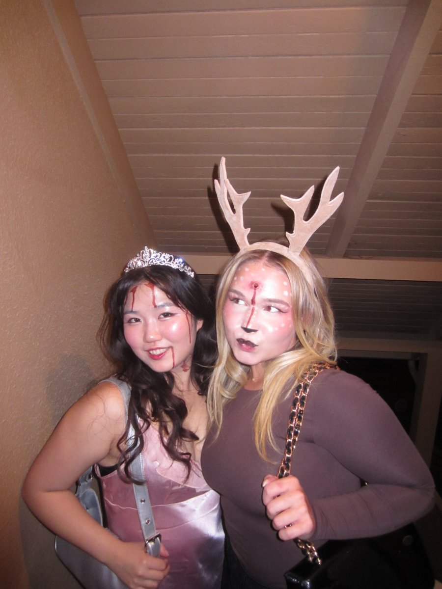
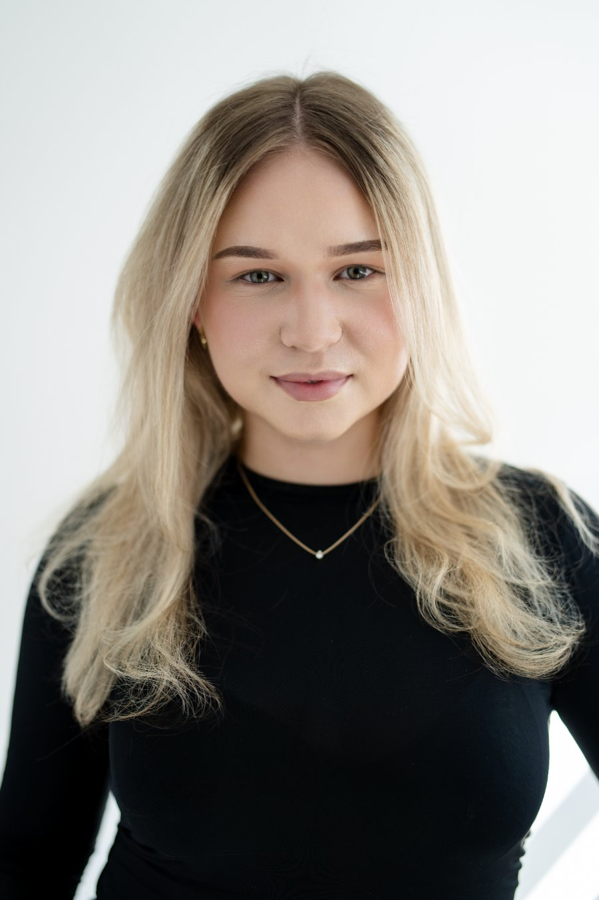
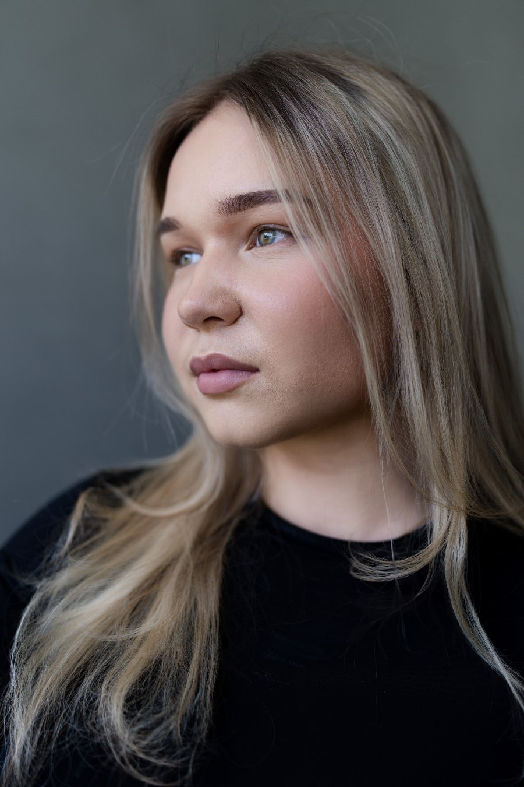

B.Sc. Software Engineering
CODE University of Applied Sciences, Berlin · Since 2026Project-based computer science: software architecture, interaction design, and building products end to end.
Software Engineering × Artificial Intelligence · Berlin / San Francisco
Understand people first.
Build second.
"I build software, and I study the people it is built for."
I’m a German student drawn to the questions that live between disciplines. My interest in computer science started at fifteen, when I began reading books about it on my own, and it grew in my advanced computer science course at school. It is also the reason I started learning Chinese: computer science carries enormous weight in the Chinese market, and I wanted a way to stand out. That interest came back to life during my year in San Francisco, where I taught myself to design and build AI systems from scratch. Today I study Software Engineering at CODE University of Applied Sciences in Berlin. People pulled me in from another direction: a year working as an au pair showed me first-hand how deeply a parent’s patterns shape the child they raise, and I wanted to understand why. Alongside that, I spent time supporting a psychology coaching practice, which gave me a close look at how people actually communicate and decide. I didn’t choose between people and technology. I chose to understand how they explain each other.
The best technology is built by people who have paid attention to humans first.
I used to think human behavior and software sat at opposite ends of a spectrum: one about understanding people, the other about building systems. The more I worked with both, the less that divide made sense. The software I build only works when it is shaped around how a real person thinks, hesitates, and decides. And what fascinates me about people, from how children are shaped by their parents to how anyone decides under pressure, keeps pointing back to structure and behavior that technology can help reveal. Studying Software Engineering puts me close enough to build the answers. The questions still come from people.
Project-based computer science: software architecture, interaction design, and building products end to end.
Designed and built 4 AI agents on Claude that run day-to-day operations: automated newsletter, email triage, daily research, and to-do delivery, all on defined schedules, without manual intervention. Owned the full system architecture, prompt design, and quality assurance.
Hands-on insight into client communication in a professional coaching context. Researched potential partner organizations and contributed to social media and booklet concepts, alongside building the automated workflows.
Lived and worked at the center of Silicon Valley’s startup ecosystem, building relationships with early-stage AI founders while developing independence and intercultural competence in a fully international environment.
Six-week program on digital transformation, technology strategy, and data-driven decision-making, with exposure to software architecture and platform strategy, exchanging perspectives with guest faculty and Silicon Valley industry leaders.
One-week internship covering the full arc of architectural practice: structural planning and construction, site visits to ongoing builds, and training in technical drawing. As a capstone, independently developed, designed, and furnished a penthouse concept from the ground up.
Intensive philosophy course on diversity, equity, and belonging in society, completed with top marks (A+), while living alongside students from over a dozen countries, an early encounter with the intercultural psychology I’d return to in San Francisco.
Four autonomous agents, designed and built from scratch on Claude. Each one runs on its own schedule, every day, without manual intervention. A fifth one is next in line.
Active since April 2026
Drafts, formats, and schedules the newsletter end to end, from content structure to consistent tone of voice.
Active since April 2026
Reads the inbox, sorts messages by urgency and topic, and prepares suggested replies, turning a daily chore into a two-minute review.
Active since April 2026
Delivers a daily research briefing on psychology and coaching topics, condensed into key insights you can act on immediately.
Active since April 2026
Collects open tasks from multiple sources like emails and calendar entries and delivers a prioritized to-do list on a fixed schedule.
Next project
A voice-first assistant that thinks for itself: it researches, drafts, remembers, suggests, works in the background, operates the computer, and starts projects of its own.
A tool for architects that turns construction drawings into 3D models and then into layouts ready to be printed in a magazine. What used to be days of manual modelling and page setup becomes a process that runs largely on its own.
The hard part is accuracy. Architects work to the millimetre, and a plan carries information that no summary may lose: dimensions, materials, load-bearing structure, and the intent behind a drawing. Automation only earns its place here if the result holds up to that level of scrutiny, which makes precision the actual product, not a detail of it.
What’s Up
On The Socials



Instagram: meuselina_LinkedIn: Selina Meusel